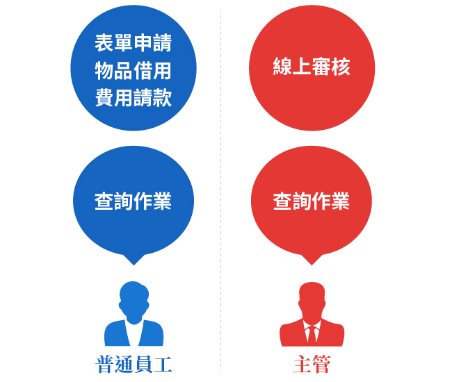
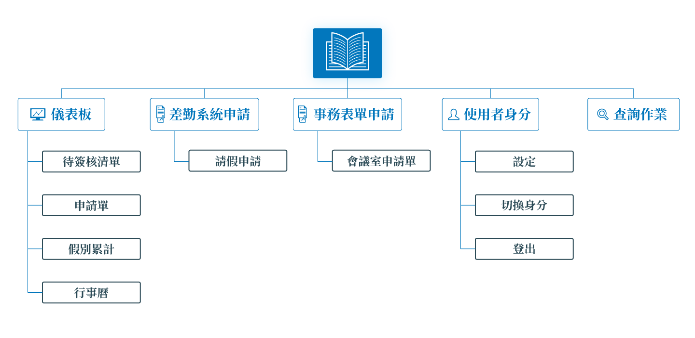
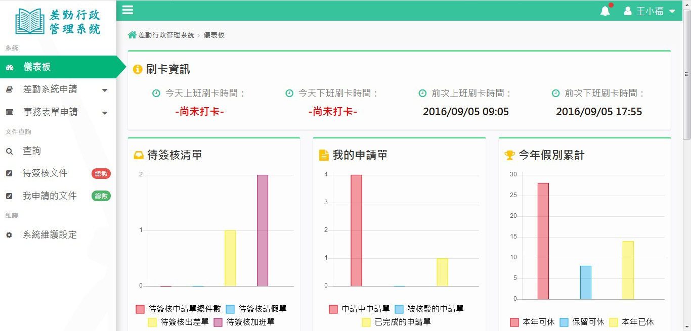

差勤行政管理系統
公司內部管理的好助手！
網站簡介
差勤行政管理系統是一個將行政作業電子化的作業系統， 對於一般員工經常使用的功能，不管是在各種事件的表單申請、 物品借用與費用請款，將省去紙本來來回回的時間成本與浪費， 主管單位更能線上審核，查閱個員工的休假日期與請款紀錄，提高單位的辦事效率。

問題點
儀表板(dashboard)的規劃，需要顯示的項目有打卡資訊、待簽核案件、申請案件、假別與行事曆，雖然項目很多但都是必要的資訊。 傳統常用的解決方式是利用表格排版，達到節省空間卻能夠在有限範圍內呈現所有的資訊，但由於顯示出來的資料量過於密集，資料與資料間的關係還需要在腦中做第二次的轉換比較，無法立即提供使用者視覺上明確的判斷來解讀資訊。 再來是表單申請，使用者必須在網頁表單中KEY入必要資訊以及依據網頁的操作流程，因此在操作流程與視覺動線上需要良好的設計規劃。

來源: 壹、Femas HR 、 貳、truckry 、 Netask 世成科技 、 肆、叡揚資訊
Sitemap

介面設計
為了讓使用者能一目了然儀表板的內容，各別資料採用適合其呈現的圖表方式。

表單申請流程強調區塊的差異，以及添加順序提示，並加入了視覺動態引導。